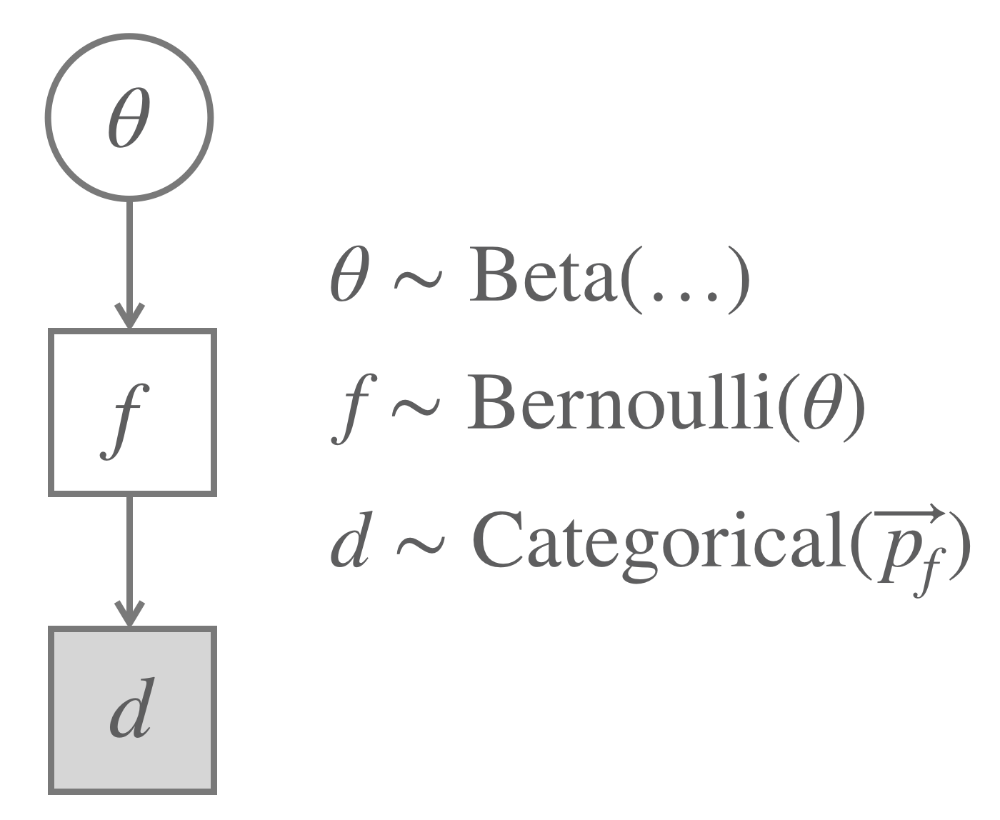
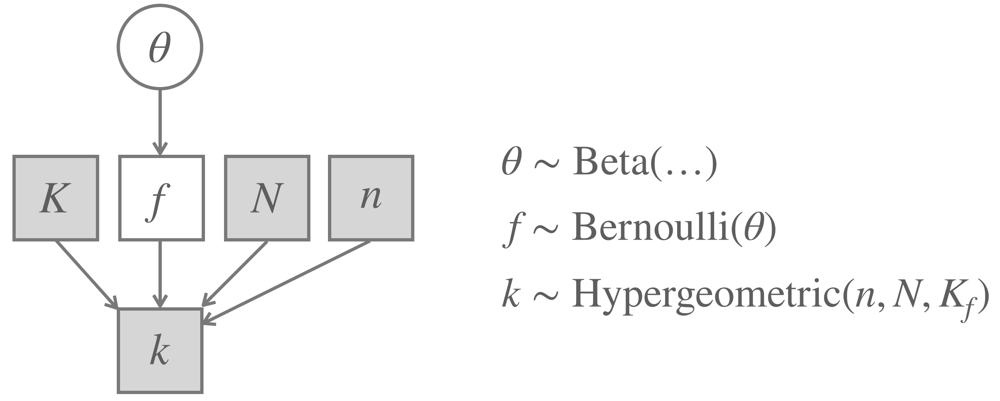
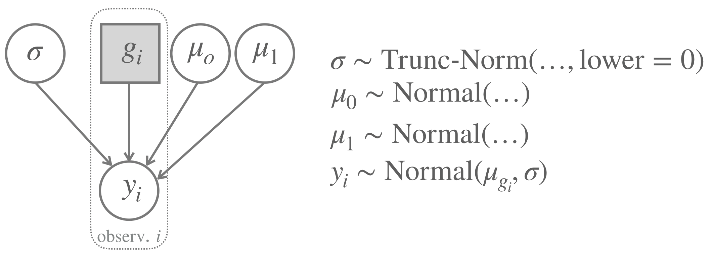
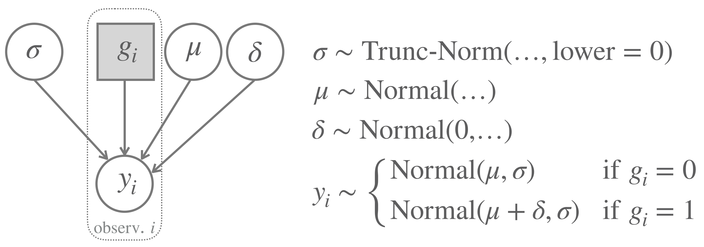
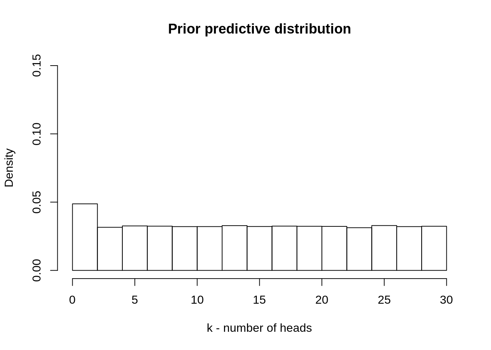
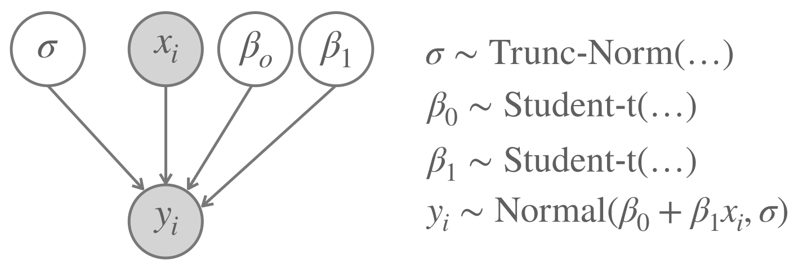
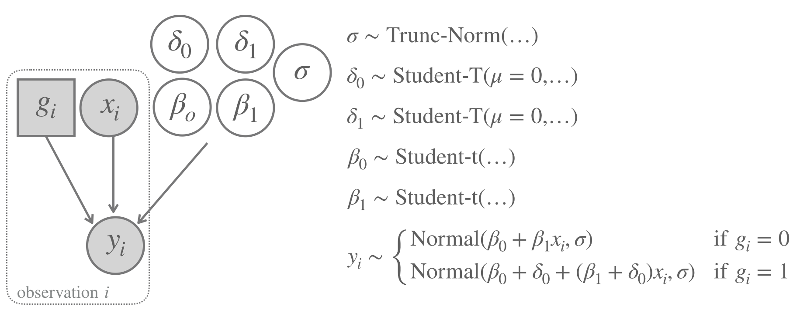

T-Test Model
Flip-and-Draw-Hypergeometric Model
Linear Regression with Two Groups
Simple Linear Regression Model
Binomial
1.4 Strolling the zoo of models
Let’s have a look at some more models. Some of the characters we will encounter here will play leading roles in the plot to come. Some are for familiarization and exercise. All are pleasant.
1.4.1 The Binomial Model
We just repeat the Binomial Model discussed above for completeness in Figure 1.2.

Figure 1.2: The Binomial Model (repeated from before).
1.4.2 Flip-and-Draw Model
The Flip-and-Draw Model is a model for the flip-and-draw scenario introduced in Section 8.2. Remember that we first flip a coin and then draw from one of two urns, depending on the outcome of the coin flip. Let’s generalize this and assume that the coin has a possibly unknown bias \(\theta\). The probability of sampling a black or white ball from the first urn is given by a probability vector \(\vec{p_0} = \langle 0.2, 0.8 \rangle\) (where the first entry gives the probability of sampling a black ball). The other urn has a corresponding probability vector \(\vec{p_1} = \langle 0.4, 0.6 \rangle\). The categorical distribution gives the probability of sampling an index from a given probability vector \(\vec{p}\). It is defined as:
\[ \text{Categorical}(i) = \vec{p}_i \]
Figure 1.3 gives a concise representation of the model.

Figure 1.3: The Flip-and-Draw Model.
1.4.3 Flip-and-Draw-Hypergeometric Model
The Flip-and-Draw-Hypergeometric Model is exactly like the previous Flip-and-Draw Model, except that we allow ourselves to sample repeatedly without replacement from an urn the coin flip selected for us. The probability of observing \(k\) black balls when drawing \(n\) balls from an urn that contains \(N\) balls in total, out of which \(K\) balls are black, and we do not put each drawn ball back into the urn is described as the so-called hypergeometric distribution. The hypergeometric distribution assigns to each \(k \in \{\max(0, n+K-N), \dots, \min(n,K)\}\) the probability mass:
\[ \text{Hypergeometric}(k \mid n, K, N) = \frac{\binom{K}{k} \binom{N-K}{n-k}}{\binom{N}{n}} \]
Suppose we keep the total number of urns fixed to \(N = 100\) and always draw \(n = 20\) balls. The two urns we have (indexed 0 and 1) hold \(K_0 = 20\) and \(K_1 = 80\) black balls. For a Bayesian model we could use a \(\text{Beta}\) prior for \(\theta\). Figure 1.4 shows the model.

Figure 1.4: The Flip-and-Draw-Hypergeometric Model.
Below is WebPPL code that allows you to test the models’ predictions about data. You can manipulate the parameter values for \(\theta\) and \(K_1\) and \(K_2\). The latter are represented in the array/vector K = [K1, K2] below.3
var theta = 0.2; var K = [20,80];
///fold:
var N = 100;
var n = 20;
var factorial = function(x) {
if (x < 0) {return "input to factorial function must be non-negative"}
return x == 0 ? 1 : x * factorial(x-1)
}
var binom = function(a, b) {
var numerator = factorial(a)
var denominator = factorial(a-b) * factorial(b)
return numerator / denominator
}
// urn contains N balls of which K are black
// and N-K are white; we draw n balls at random
// without replacement; what's the probability
// of obtaining k black balls?
var hypergeometricPMF = function(k,N,K,n) {
k > Math.min(n, K) ? 0 :
k < n+K-N ? 0 :
binom(K,k) * binom(N-K, n-k) / binom(N,n)
}
var hypergeometricSample = function(N,K,n) {
var support = _.range(N+1) // possible values 0, ..., N
var PMF = map(function(k) {hypergeometricPMF(k,N,K,n)}, support)
categorical({vs: support, ps: PMF })
}
viz(Infer({model: function() {var K_urn = K[flip(theta) ? 1 : 0];
hypergeometricSample(N, K_urn, n)},
method: "forward",
samples: 1500}))
///
1.4.4 T-Test Model: comparing two groups
Consider the example introduced in Section 9.1 again, where we set out to compare the means of average prices of different types of avocados. We assume that there is an indicator variable \(g_i\) (corresponding to type), such that, for example, \(g_i = 0\) is for observations from organic avocados and \(g_i = 1\) is for observations from conventionally grown avocados. A first instance from the T-Test Model family for the comparison of two groups assumes that the first group has a mean \(\mu_0\) and the second has \(\mu_1\), while both share the same standard deviation \(\sigma\). Using the notation developed in Section 9.2, we can write the likelihood function succinctly like so:
\[ y_i \sim \text{Normal}(\mu_{g_i}, \sigma) \]
In a Bayesian approach, the priors over parameter values could use a normal distribution for \(\mu_i\) and a truncated normal distribution for \(\sigma\) (since \(\sigma\) must be positive). Figure 1.7 shows the resulting model.

Figure 1.5: A T-Test Model where each group has its own mean.
A point of general importance can be made in connection with this example. It is possible to build different prior structures around the same likelihood function. Some parameterizations can be more useful for a given purpose than others. Some parameterizations make it easier to formalize prior domain knowledge than others. To see this, consider the case at hand where we might be specifically interested in the question of how big the difference between the means is. We can therefore also level the model shown in Figure 1.6.

Figure 1.6: A T-Test Model where one group is the default and the difference between group means is explicitly coded as a parameter.
The variant of the T-Test Model, formulated in terms of differences between groups, in Figure 1.6 is what is usually used in common practice. The advantage is, for example, that it is easy to address the question whether the means are identical, a case which is represented by a single parameter value \(\delta = 0\) (rather than an infinite set of pairs \(\mu_0 = \mu_1\)). It is also easier to specify beliefs about the differences between groups. The prior on \(\delta\) in Figure 1.6 assumes that we expect a priori that \(\delta = 0\), but specifying different standard deviations for this prior allows to formalize different degrees of certainty. We could for example use a skeptical prior, i.e., an initial model configuration that is skeptical about a group difference, if the standard deviation is set very low.
1.4.5 Simple Linear Regression Model
In Section 7.3, we plotted avocado prices in a scatter plot. In particular, we plotted (the log of) average_price as a function of total_amount_sold, and we also added a regression line, like so:

A simple linear regression tries to relate pairs of associated observations, frequently denoted as \(x_i\) and \(y_i\). Here, \(i\) is an index over observations, \(x_i\) is the (continuous) independent variable and \(y_i\) is the (continuous) dependent variable. In our example, the vector \(x\) is the logarithm of total_amount_sold and \(y\) is the vector average_price. The simple linear regression model assumes that there is a simple linear relationship between \(x\) and \(y\). A perfect linear relationship would exist if for all \(i\):
\[ y_i = \beta_0 + \beta_1 \ x_i \]
Given measurement error and other lingering uncertainties, we rather handle a linear relation with stochastic noise, in which the linear relationship holds, but could be distorted by an \(\epsilon\) error, which we assume is independently drawn for each \(i\) from a normal distribution:
\[ y_i = \beta_0 + \beta_1 \ x_i + \epsilon_1 \ \ \ \ \ \ \text{where} \ \ \ \ \epsilon_i \sim \text{Normal}(\mu=0, \sigma = \dots)\]
An alternative formulation is to simply write:
\[ y_i \sim \text{Normal}(\mu=\beta_0 + \beta_1 \ x_i , \sigma = \dots)\]
This is the likelihood function that the Simple Linear Regression Model assumes. Figure 1.7 summarizes the full model by also indicating roughly which kinds of prior distributions might be useful in a Bayesian analysis.

Figure 1.7: The Simple Linear Regression Model.
1.4.6 Linear Regression with Two Groups
Section 7.3 also plotted avocado prices against the total amount sold and distinguished the type of avocado, also adding a separate regression line for each type. The result looked like this:

Towards a model that computes these linear regression lines, one for each group, that is in line with the idea introduced above that, for the purposes of estimation and testing, we might like to represent differences between groups as \(\delta\) parameters in a model, let’s assume that the type of avocado is our grouping variable \(g_i\). The default group (say: conventional avocados) has \(g_i = 0\), the other group has \(g_i = 1\). The first group gets “its own” intercept \(\beta_0\) and slope \(\beta_1\). The second group gets additive offsets \(\delta_0\) and \(\delta_1\) for its slope and intercept, respectively. The full model is shown in Figure 1.8.

Figure 1.8: The Linear Regression with Two Groups Model.
Exercise 8.6
Which model would you rather use to investigate…
…if there is a difference between chocolate consumption per person in Germany and Belgium?
…how many people visited your webpage for the first time? You know that overall 50 people were there. And you see 7 comments, five of which are left by your old followers.
…if running speed increases with every 100m among sprinters, but not within marathoners?
…the relationship between the time spent on studying and the amount of coffee consumption?
…if a football referee is biased and gives yellow cards more often to one of the teems? Consider that the fold probability is known for each team.
To learn about WebPPL the fast way, try this tutorial.↩